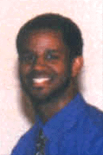
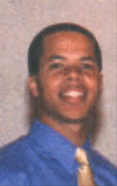
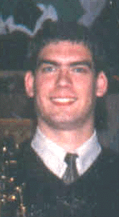
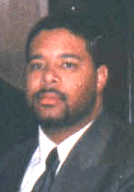

Musicians
| James
R. Wigington, Jr. - Keyboards,
Sequencing, Talk Box, and Vocals |
Kenny
Harris - Congas, Roto
Toms, and Jam Blocks
|
|
Robert
Maletick - Saxaphone
(Tenor and Soprano)
|
Johnathan
White - Back-up Percussionist
|
|
T.J.
Nokes - Guitar,
Drums, and Background Vocals
|
E.J.
White - Percussionist
|
Vocalists
| Mike
Coleman |
|
| Stevie
Tibbs, Jr. |
Bios
|
Michael E. Coleman 25, born and raised in the Northern Virginia area. He started singing gospel music at the age of 2. Doing concerts all over Virginia. Mike's inspiration to sing came from his parents, who were raised in the church and participated in there church chiors. Mike is a original member of YS, which he help start in 1993. He ask that you all continue to pray for the Youthful Spirits and himself that they continue to grow and walk in the path that the Lord has set for them.
|
|
Marcus Dulaney fields, Jr. was born Oct. 14,1977, in Arlington Hospital. Marcus is the oldest of four children parented by Marcus and Robin Fields. He has 2 brothers, Michael- 20, and Mitchell- 18, and a younger sister Meesha- 16. His hobbies include writing and arranging music, studying the Bible, playing basketball, singing, and cooking. Marcus musical influences came from Stevie Wonder, Donnie Hathaway, Marvin Gaye, The Jubilee Travelers, D'Angelo, Babyface, The Winans, Richard Smallwood, New Edition, and Earth, Wind and Fire. Quote: "When remembering me, remember my heart. My intentions are always to help people and never to hurt. I love people, I love God with all of my heart and I love with the love of God." |
|
Roderick Marshall Jeter Jr., also known as "Tiki", was born on Clarke Air-Force Base Oct. 12, 1977. Arriving back to the United States in 1990, it was then the family decided that it would be in the city of Manassas, VA where they would reside until both children completed their education. Upon completing his sophomore year at U of R, Rod transferred to GMU majoring in International Business. Some of the organizations he has been a part of since he has been at GMU: Alpha Chi, Honor Society, Black Student Alliance, Shabach for Christ Ministry, Youthful Spirits, GMU NAACP and GMU Gospel Choir, Anointed Voices of Unity. Rod is working towards establishing his own international organization; one which is rooted in Christian principles, and who's mission is to advance the ever-saving power of Jesus Christ through outreach, service, promotion and empowerment. It is at First New Birth Baptist Church where he has been a member for 8 years, and where the Rev. John E. Blackmon Sr. is the residing pastor and founder. His motto is: "Don't be fooled by my achievements, I am still nothing to God but a simple sinner-man who he decided to pour his blood on."
|
|
Pushing the racial boundaries still evident in today's music Rob Maletick has challenged himself to make a difference with the gifts that God has given him Christian music is still separated by skin color, and by combining Gospel and Jazz music Rob wishes to communicate the idea that color makes no difference. As a young saxophonist, age 23, Rob brings a youthful approach to a genre dominated by older musicians. Starting a record label with his brother, Chris releasing a debut album entitled Walking The Path, and performing with world-renowned artists has started a career for Rob that has already drawn international attention. While studying Jazz performance and Music Business at Shenandoah University Rob performed with many notable Jazz artists such as Randy Brecker, Dr. Billy Taylor, Bob Berg, Chris Vadala, and Saul Miller to name a few. As a member of the Shenandoah Jazz Ensemble, Rob toured Europe in the summer of 1995 and Asia in the summer of 1996. These experiences laid the ground work and technical training needed for a future in the recording industry. The Gospel-Jazz Saxophonist is a title Rob takes quite seriously. "I believe instrumental Gospel music allows God to talk to an individual level, with no words or preconceived ideas to get in the way." Using his deep jazz background and roots in the Church, Rob has created a unique musical style that has a Biblical value, yet is easily heard on smooth jazz radio. |
|
Stevie Tibbs, Jr.was born and raised in the Northern Virginia area. He has been singing since the age of 5. He has travelled all over the DC Metro area doing concerts with the Youthful Spirits and has opened up for many big name groups that come to perform. Stevie like the other member of Youthful Spirits, started singing in other groups and as a solo artist as well before teaming up with YS. Stevie enjoys playing basketball, singing, and writing songs. Stevie prays that the music he continues to make with Youthful Spirits will always impact the lives of people and to continue to be a blessing for all people.
|
|
James "Robbie" Wigington Jr. is one of the original members of the group and the driving creative force behind the music. In addition to being the keyboard player for the group, Robbie also can play the bass guitar and all percussion instruments. Known for his high level of energy. Robbie plays for 4 choirs at the Mt. Olive Baptist Church in Centreville, Virginia, serves as the director of the 150 voice MLK choir in Prince William County, Va. In addition to his ministry with the Youthful Spirits, Robbie has also worked and ministeres with many local and national Gospel artists and organizations, including the Anointed Voices of Unity (GMU Gospel Choir), GMWA, Stellar Award Nominees, the Bolton Brothers, Al Phillips and the Divine Messengers. The Barbour Travelers, Tones of Joy, The Hezekiah Walker "Family Affair" video technical staff and the Hylton Memorial Chapel. Favorite groups are the Canton Spirituals and John P. Kee. Favorite Bible verses are Psalms 37 and Psalm 150. He is married and has one son, James III (Lil' Robbie).
|
The Ministry | The
Album | The Music
Calendar | The
Pics | Kool Linx | Contacts
| Home